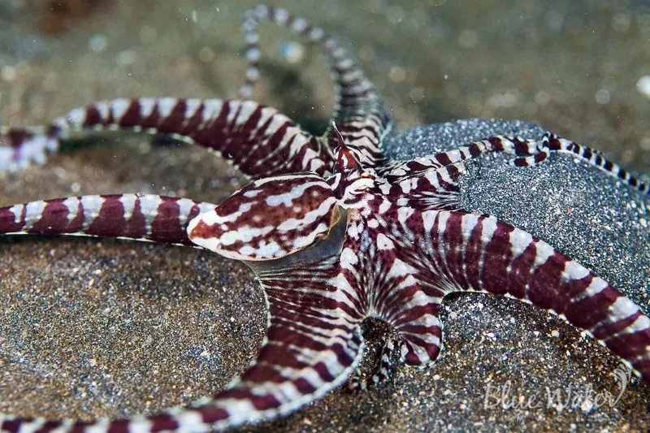

软体动物 · 动物界
拟态章鱼 Thaumoctopus mimicus

1998 年才被发现的章鱼，能模仿狮子鱼、海蛇、比目鱼等十多种海洋生物的姿态和花纹，是已知最擅长模仿的动物之一。
- 分类
- 门软体动物门纲头足纲目八腕目科蛸科属拟态章鱼属
- 栖息环境
- 印度洋—西太平洋热带浅海的沙泥底质河口和礁区，水深 1–20 m
- 地理分布
- 印度尼西亚、菲律宾、马来西亚和澳大利亚北部等热带海域
- 保护级别
- 暂无评估
物种志
拟态章鱼体型中等，外套膜长约 5–6 cm，连腕全长可达 60 cm。它的体色通常为浅黄褐或黑白条纹，皮肤能高度变形，改变体表的纹理和颜色，这是它进行模仿的基础。
拟态章鱼分布于印度洋—西太平洋的热带浅海，包括印度尼西亚、菲律宾、马来西亚和澳大利亚北部，生活在沙泥底质的河口和礁区，水深 1–20 m。它是肉食性动物，捕食小鱼、虾蟹和蠕虫。拟态章鱼以模仿能力闻名：它能模仿有毒的狮子鱼，把腕足张开像展示毒棘；能模仿海蛇，把腕足收拢成蛇形；还能模仿比目鱼、海星、海葵等生物，用模仿来躲避天敌。这种章鱼直到 1998 年才在印度尼西亚苏拉威西岛附近被科学界正式描述，是较晚被发现的头足类。目前它没有IUCN 的正式评估，中国未将其列入国家重点保护野生动物名录。
形态与习性
- 食性捕食小鱼、虾蟹和蠕虫
- 体长外套膜约 5–6 cm，连腕全长可达 60 cm
- 模仿对象狮子鱼、海蛇、比目鱼、海星、海葵等十多种生物
- 栖息深度沙泥底质河口和礁区，水深 1–20 m
- 发现1998 年才在印度尼西亚苏拉威西岛附近被正式描述
- 习性通过改变体色和腕足姿态模仿其他生物，用以躲避天敌
趣味知识
- 拟态章鱼能模仿狮子鱼、海蛇、比目鱼等十多种生物的姿态。
- 它模仿有毒的狮子鱼时，会把腕足张开，像在展示毒棘。
- 拟态章鱼直到 1998 年才被科学界正式描述，是较晚被发现的章鱼。